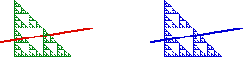

| The union of two sets, A and B, is the set consisting of all elements belonging to either set. |
| For example, |
| A = {1,2,3}, B = {2,3,4,5}. Then A ∪ B = {1,2,3,4,5} |
| A is the square, B is the line segment, both together are the union A ∪ B |
| A is the gasket, B is the line segment, both together are the union A ∪ B |
|  |
Return to the algebra of dimensions.